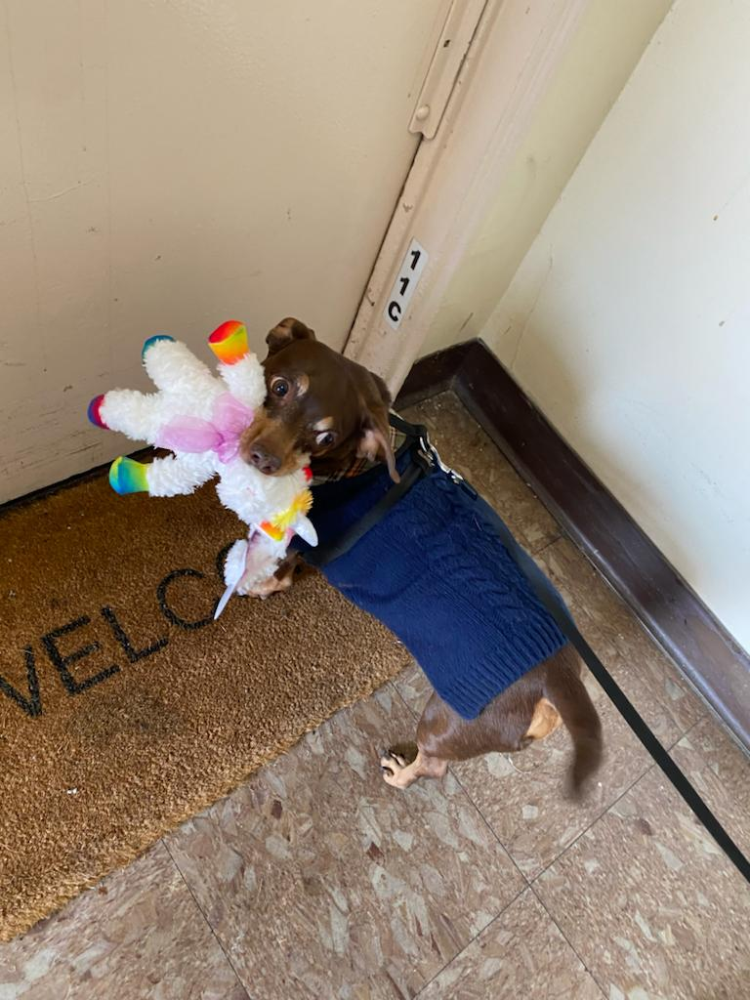

1. Adopting is less expensive
2. Dogs can help recovering addicts
3. Adopting a pet can lower blood pressure
4. It helps with PTSD
5. You make more friends!
There are many organizations out there!!
ASPCA Adoption Center
Bideawee
Animal Care Center of NYC - Brooklyn/Manhattan
Best Friends Lifesaving Center
